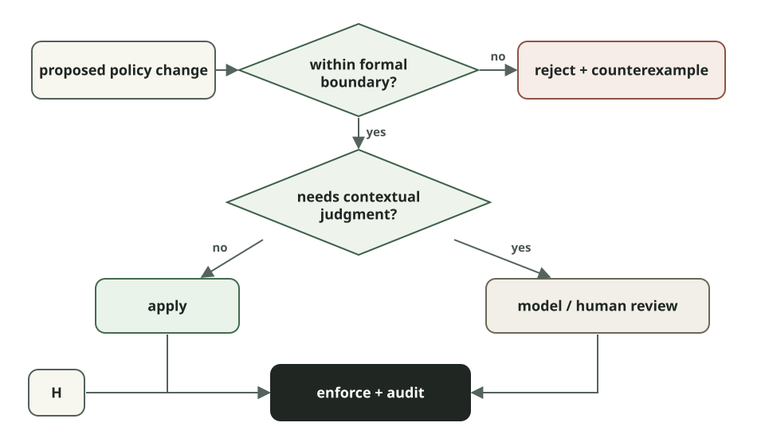

Learning Formal Methods by Building an Agent Policy Prover

Using Z3 to reason about permission changes in long-running AI agents.
Suppose an agent is halfway through a task and hits a policy denial. It can explain why it needs more access and even draft the policy change that would unblock it.
The hard question is whether the system should accept that change.
This is a problem we have been working on in OpenShell, an open-source runtime for agents featuring policy-controlled sandboxes. OpenShell policies can constrain network endpoints, credentials, filesystem access, methods, paths, and protocol-specific operations. An agent doing useful work will eventually encounter something its current policy does not allow.
One option is to send every proposed change to a human or model for review. But some permission questions have a more precise answer.
If an operator has already defined the maximum authority an agent may obtain, we can ask, is:
The candidate is the fully composed policy after the proposed change. The maximum is an operator-controlled ceiling on what that sandbox may ever be allowed to do.
This sounds simple until policies start composing.
A request for one GitHub endpoint might instead grant every method under a wildcard path. Raw L4 access can create a path around REST, GraphQL, or MCP inspection. A rule that looks reasonable by itself can interact with existing rules in ways that are difficult to catch by reading YAML.
We use Z3 to search for a concrete action that the candidate allows and the maximum does not. If Z3 finds one, the proposed policy exceeds the boundary. If no such action exists under the modeled semantics, the candidate is contained.
That still leaves plenty of work for models and humans. A solver cannot determine whether a request makes sense for the user's task, whether an action is reversible, or whether an unusual combination deserves review. Those are contextual questions.
The prover handles a narrower problem: given a model of policy semantics and a property we care about, can it find a violation?
This post walks through that problem from the ground up: how the containment query works, how we encode OpenShell policy in Z3, where the model stops, and an experiment we are starting around least-privilege budgets for agent-authored policy changes.
Formal methods, at the scale of one decision
Formal methods cover a large family of techniques for describing systems and properties mathematically and then reasoning about whether those properties hold. Model checking, theorem proving, abstract interpretation, SAT solving, and SMT solving all fall under that umbrella.
For the problem here, we only need four pieces:
- A model: a precise representation of the actions a policy permits.
- A property: for example, “the candidate grants no action outside the managed maximum.”
- A decision procedure: Z3 searches for an assignment that satisfies the logical query.
- An enforcement point: the gateway acts on the result before committing the policy change.
The guarantee is relative to those pieces.
If the model omits a policy field, the proof says nothing about that field. If the runtime and prover interpret a glob differently, they disagree about the boundary. If an agent has another path to the same effect, proving one admission decision correct does not give you complete mediation.
So “formally verified” does not mean “the system is safe.” For this use case, it means something narrower: under the policy semantics represented in the model, the solver could not find an action that violates the property we asked it to check.
That narrow statement is useful- A model reviewing a permission request can be influenced by the request's wording, miss an interaction, or make different decisions on two similar inputs. Z3 evaluates the formula it receives. The parts that deserve scrutiny are explicit: the specification, its encoding, the handoff from proof to commit, and the runtime enforcement semantics.
SAT, SMT, and Z3 in five minutes
A SAT solver answers whether a Boolean formula is satisfiable.
Given variables such as a and b, it can find an assignment that makes this
formula true:
An SMT solver extends that style of reasoning with theories: integers, real numbers, strings, regular languages, arrays, bit-vectors, and other useful domains.
Z3 is an SMT solver and theorem prover developed by Microsoft Research. Its supported theories map conveniently to policy models:
- ports are integers;
- hosts and paths are strings;
- globs can be represented as regular expressions;
- policy composition becomes Boolean logic.
The Z3 Guide is the best reference once the examples below feel familiar.
A few constructs cover most of what we need:
| Construct | Meaning | OpenShell example |
|---|---|---|
| Sort | A type of value | String for a host, Int for a port |
| Symbol | A value Z3 is free to choose | the unknown action's method or path |
| Constraint | A formula that must hold | 1 <= port <= 65535 |
| And, Or, Not | Logical composition | candidate allows and maximum does not |
| String/regex theory | Constraints over text and languages | a path belongs to a compiled glob |
| Solver assertion | Adds a required formula | assert the existence of a violation |
| sat | A satisfying assignment exists | there is an action outside the maximum |
| Model | One satisfying assignment | a concrete binary, host, method, and path |
| unsat | No satisfying assignment exists | containment is proved for the model |
| unknown | Z3 did not establish either result | fail closed and request review/support |
The direction of the query is important.
We do not ask Z3 to prove:
We ask it to find a violation:
The same thing can be written as a set difference:
If the solver returns sat, the difference is non-empty and its model gives us
a concrete member.
If it returns unsat, no modeled counterexample exists.
A first containment query
Here is a small example in Z3's native SMT-LIB format. Save it as
containment.smt2 and run:
The example compares two candidate policies against the same maximum.
(declare-const binary String)
(declare-const host String)
(declare-const port Int)
(declare-const method String)
(declare-const path String)
(define-fun maximum-allows () Bool
(and (= binary "/usr/bin/gh")
(= host "api.github.com")
(= port 443)
(= method "GET")
(str.prefixof "/repos/NVIDIA/OpenShell/issues/" path)))
(define-fun broad-candidate-allows () Bool
(and (= binary "/usr/bin/gh")
(= host "api.github.com")
(= port 443)
(= method "POST")
(str.prefixof "/repos/NVIDIA/" path)))
(define-fun narrow-candidate-allows () Bool
(and (= binary "/usr/bin/gh")
(= host "api.github.com")
(= port 443)
(= method "GET")
(= path "/repos/NVIDIA/OpenShell/issues/123")))
(push)
(assert (and broad-candidate-allows (not maximum-allows)))
(check-sat)
(get-model)
(pop)
(push)
(assert (and narrow-candidate-allows (not maximum-allows)))
(check-sat)
(pop)
The first check returns sat.
One possible model is:
That action is permitted by the broad candidate and not by the read-only maximum.
The narrow candidate returns unsat: its exact GET request is contained by the
maximum.
push and pop create temporary solver scopes. They are convenient when
several related queries share one base model. OpenShell's current containment
function creates a fresh solver for each containment query; some earlier
verification experiments used incremental scopes to run several risk queries
over the same reachability model.
There is also no explicit exists in the source.
Because binary, host, port, method, and path are declared without fixed
values, Z3 is free to choose them. Operationally, satisfiability is answering:
Avoiding explicit quantifiers where possible keeps the SMT model simpler and tends to make solver behavior easier to reason about.
Encoding OpenShell policy as formal logic
OpenShell models one symbolic network action:
Rust parses and normalizes the policy schema, then builds two Boolean predicates over the same symbolic action:
At the center of the containment check is essentially:
let candidate_allows = policy_allows(candidate, &action);
let maximum_allows = policy_allows(maximum, &action);
solver.assert(Bool::and(&[
candidate_allows,
!maximum_allows,
]));
match solver.check() {
SatResult::Unsat => MaximumPolicyCheck::WithinMax,
SatResult::Sat => {
let model = solver.get_model().expect("sat result has a model");
let counterexample = counterexample_from_model(&model, &action)
.expect("model contains a symbolic action");
MaximumPolicyCheck::ExceedsMax { counterexample }
}
SatResult::Unknown => MaximumPolicyCheck::Unsupported {
reason: "Z3 returned unknown".to_owned(),
},
}
The policy itself becomes nested conjunctions and disjunctions.
Conceptually:
policy_allows(a) = ⋁ rule_allows(rule, a)
rule_allows(rule, a) =
binary_matches(rule, a) ∧ endpoint_matches(rule, a)
An endpoint constrains the host and port. When L7 inspection is active, it also constrains things such as methods and paths.
OpenShell supports * and ** glob semantics. These are compiled into Z3
regular expressions. A single * cannot cross the relevant separator — / for
paths or . for hosts — while ** can. Z3's regular-expression theory then
checks whether the symbolic string belongs to the resulting language.
This matters because the network layer is part of the authority being proved.
Raw L4 authority over a binary, host, and port is broader than inspected L7 authority over the same connection. L4 does not preserve REST methods and paths, GraphQL operations and fields, or MCP tools and resources. A raw network grant can therefore include actions that would have been excluded by protocol-specific controls.
That interaction is easy to miss when reviewing one rule at a time. In the logical model, the two grants denote different sets of actions.
Know what the prover does not model
The hardest part of applying formal methods here is not writing the final Z3 query. It is deciding what the formula actually means.
Our initial maximum-policy envelope spike modeled L4, REST, and WebSocket authority. Policy surfaces that had not yet been encoded, including GraphQL and MCP, failed closed.
OpenShell supports protocol-specific GraphQL and MCP controls, but a containment result should not claim coverage until their operation, field, tool, and resource semantics are represented faithfully in the model.
Unsupported authority has to stay visible. Silently dropping it from the
formula would make unsat mean less than the system claims.
The current containment surface covers filesystem paths, L4, and enforced REST,
including explicit REST denies and regions marked review.required. GraphQL,
MCP, query matchers, and CIDR-based allowed_ips remain explicit modeling work
rather than implicit approvals.
Filesystem containment is part of the same admission result, but the current implementation checks normalized parent/child path coverage directly in Rust rather than representing that relationship inside the symbolic network-action model.
Those implementation boundaries are part of the security claim.
A managed maximum
We use the containment query as the basis for a managed maximum.
The maximum is owned by the gateway and acts as a ceiling. It does not grant the sandbox access by itself.
Before creating a sandbox or committing an authority-changing update, the gateway evaluates the fully composed sandbox and provider policy against that ceiling.
For an agent-authored proposal, the result can be:
- Apply: the proposed authority is inside the maximum's auto-eligible region.
- Ask: it is inside the maximum but intersects authority marked for review, or the sandbox is running in managed ask mode.
- Reject: it exceeds the maximum or depends on a policy surface the prover does not support.
The gateway recomputes containment against live policy and provider state immediately before persistence.
That last step matters. A proposal that passed earlier is evidence that a particular state was acceptable; it is not a reusable capability token.
Why we moved away from a collection of risk checks
Our first experiments with formal verification in OpenShell asked several specialized security questions.
- Could a binary reach link-local metadata?
- Did a proposal expand credential-bearing reach?
- Could raw L4 access bypass L7 inspection?
- Did the change expand methods on an already reachable credentialed endpoint?
These checks were useful. They encoded security expertise and produced evidence a reviewer could inspect.
They also created another problem.
Each new risk category needed its own model, fixtures, reporting, suppression behavior, and a product decision about how that finding should affect admission. Over time, the collection of checks risked becoming a second definition of what authority was acceptable.
The managed-maximum design makes the approval boundary explicit:
Credential-bearing reach and capability expansion can still be useful observations. They do not need to be independent approval systems when the complete candidate policy already has to fit within an operator-defined ceiling.
If an organization wants some otherwise-contained authority to require review,
it can mark that part of the maximum as review.required.
We have found it useful to keep these concepts separate:
runtime invariants properties policy may never override
active sandbox policy authority enforced on each relevant action
managed maximum boundary for changing that authority
advisories context presented to a reviewer
The distinction keeps an advisory from quietly turning into an authorization rule.
Can least privilege have a budget?
Containment tells us whether a candidate stays below the maximum.
It does not tell us whether the candidate is a good response to the denial that caused the agent to request more access.
Suppose the maximum allows read access across an organization's GitHub repositories. An agent needs to read one issue and proposes:
That proposal may be fully contained by the maximum while still being much broader than the task required.
We have started experimenting with a second comparison:
For each proposed grant, Z3 can determine whether it adds new authority and return a representative new action.
The current spike then evaluates the shape of that grant in Rust.
An exact addition can have a low cost. A wildcard costs more. A recursive **
costs more again. Replacing inspected L7 authority with raw L4 access carries a
much larger cost.
A conservative budget could permit one exact addition while routing broader changes to review.
This is deliberately a hybrid.
Z3 is not measuring the cardinality of an often-infinite action set. It establishes that semantic expansion exists and can produce examples of that expansion. The budget is a product policy over structural features of the proposed grant.
Whether those features and weights correspond well enough to operational risk is something we still need to test.
Maximum containment is further along as an admission boundary. Least-privilege budgets are an experiment.
A few questions we want to explore:
- Can denials and solver counterexamples help agents draft narrower policy changes on the next attempt?
- Can we define useful notions of semantic breadth for GraphQL operations and MCP tools without reducing them to fragile syntax scores?
- How should many individually small permission changes accumulate over a long-running task or a tree of delegated agents?
Where models still belong
A containment proof only answers the question encoded in the property.
It does not know why an agent wants access. It does not know whether the user's request makes an action appropriate. It cannot weigh business context, reversibility, or unusual combinations that were never represented in the model.
Those are reasons to keep model-based and human review in the system.
An approval flow we are exploring looks roughly like this:

There is precedent for combining these kinds of mechanisms.
OpenAI describes combining model-based and rules-based guardrails. Anthropic's work on trustworthy agents treats safety as a property of the model, harness, tools, and environment together. Google DeepMind's VeriGuard similarly places verification between proposed agent behavior and execution.
Our working rule is simple: use a formal check when the boundary can be stated precisely, and do not ask the formal model to answer questions it was not built to represent.
Likewise, a contextual reviewer should not silently override a hard invariant just because the request sounds convincing.
Keeping those roles explicit makes the resulting authority easier to reason about.
Start with one decision
The core containment query is small:
You do not need to begin by formally specifying an entire agent or proving a neural network correct. Pick one consequential decision with inputs you can model, write down one property you want to preserve, and put the check somewhere that can actually enforce the result.
For OpenShell, that decision is whether an agent may change its own sandbox authority.
SMT solving gives us a different artifact from another review of the request: either a counterexample showing authority outside the maximum, or a proof that no such action exists under the modeled semantics.
There is plenty we have not modeled yet, and least-privilege budgeting is still an experiment. That is part of what makes this area useful to work on in the open.
If you are building agent policies, tool permissions, or another constrained action surface, try writing down the action space explicitly and asking the solver for the counterexample.
Sometimes the useful part of formal methods is not proving a large system correct. It is making one boundary precise enough that the system can answer for itself.